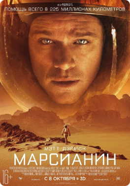

Марсианин, The Martian 2015
Фантастика, приключения
7.8
Марсианская миссия «Арес-3» в процессе работы была вынуждена экстренно покинуть планету из-за надвигающейся песчаной бури.
Инженер и биолог Марк Уотни получил повреждение скафандра во время песчаной бури.
Сотрудники миссии, посчитав его погибшим, эвакуировались с планеты, оставив Марка одного.
Очнувшись, Уотни обнаруживает, что связь с Землёй отсутствует, но при этом полностью функционирует жилой модуль. Главный герой начинает искать способ продержаться на имеющихся запасах еды, витаминов, воды и воздуха ещё 4 года до прилёта следующей миссии «Арес-4».
Очнувшись, Уотни обнаруживает, что связь с Землёй отсутствует, но при этом полностью функционирует жилой модуль. Главный герой начинает искать способ продержаться на имеющихся запасах еды, витаминов, воды и воздуха ещё 4 года до прилёта следующей миссии «Арес-4».